The Model
From en.wikipedia.org/wiki/Vicsek_model:
The Vicsek model is a mathematical model used to describe active matter. One motivation of the study of active matter by physicists is the rich phenomenology associated to this field. Collective motion and swarming are among the most studied phenomena. Within the huge number of models that have been developed to catch such behavior from a microscopic description, the most famous is the model introduced by Tamás Vicsek et al. in 1995.[1]
Physicists have a great interest in this model as it is minimal and describes a kind of universality. It consists in point-like self-propelled particles that evolve at constant speed and align their velocity with their neighbours' one in presence of noise. Such a model shows collective motion at high density of particles or low noise on the alignment.
Each particle is described by a position, 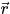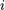, and a velocity, 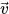. Particles always travel at the same velocity, 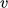 = ||, so that the velocity for each particle may be written as = (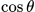, 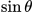), where 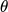 gives the direction of motion for each particle and is a constant.
After each time step, the direction of motion for each particle is updated to be the average of all of its neighbours that fall within a cutoff radius, 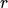, plus a uniform random noise variable, 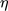 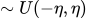.
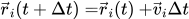, and
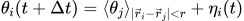
When the noise is great enough, the particles will no longer move in a common direction and the average directed velocity of particles will be close to zero. At this point the system is said to have undergone a phase transition from a system with collective motion to a system with randomly moving particles.
Data